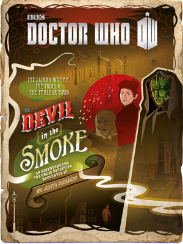
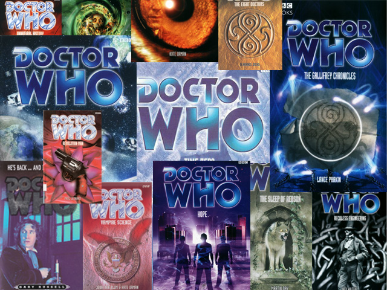
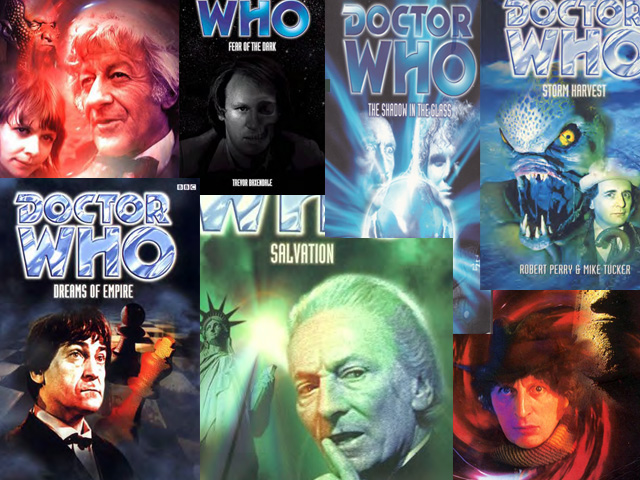
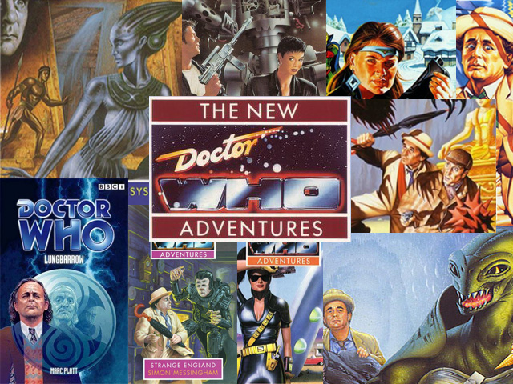
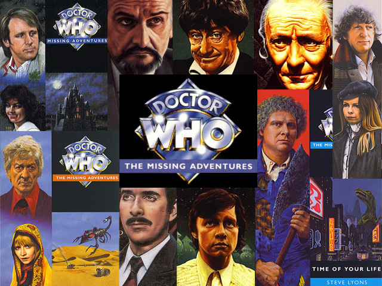

Os Livros de Doctor Who
Os livros de Doctor Who surgiram como novelizações dos arcos da série clássica na televisão publicados pela Target Books, afinal, na época ainda não existiam aparelhos de reprodução de vídeo caseiro acessíveis nem a internet. Outras editoras como a própria BBC Books, Telos e Virgin Publishing também publicaram livros de Doctor Who pelos anos seguintes até os dias atuais: com séries, contos, novelas, romances e etc.
Os Gêneros Literários de Doctor Who
Todos os livros de Doctor Who são de gênero narrativo, onde há a presença de um narrador, responsável por contar uma história na qual os personagens atuam em um (ou vários) determinado (s) espaço (s) e tempo (s). O gênero narrativo tem diferentes formas de se contar uma história, aqui abordaremos apenas as que estão nos livros de Doctor Who:
- Conto: é uma narrativa curta que gira em torno de um só conflito, com poucos personagens.
- Novela: é uma narrativa curta, porém, pouco maior que um conto. É dinâmica e dividida em episódios/partes, que são contínuos e sem interrupções.
(E não deve ser confundida com as famosas telenovela da TV). - Novelização: Nada mais é do que transformar um episódio/arco da série TV em uma novela.
Os livros surgiram inicialmente como adaptações dos arcos exibidos na televisão, afinal, na época ainda não existiam aparelhos de reprodução de vídeo caseiro acessíveis. A Target Books lançou entre 1973 e 1991 quase todos os arcos da série clássica adaptados em livros. Além desses, roteiros de arcos que acabaram não sendo produzidos foram também transformados em livros e lançados. Com o cancelamento da série em 1989, a Virgin Publishing lançou duas séries de livros, NA (New Adventures), com aventuras do 7º Doctor; e a MA (Missing Adventures), com os 6 primeiros Doctors.
A partir de 1996, a BBC passou a lançar livros com o 8º Doctor, EDA (Eight Doctor Adventures), e a PDA (Past Doctors Adventures). Em 2005, as duas séries foram canceladas e a BBC começou a lançar a NSA (New Series Adventures), além de audiobooks dessa série, tanto com leituras dos livros escritos, como com material inédito.
Aqui disponibilizamos os ebooks em três formatos, EPUB, MOBI e PDF, além dos audiobooks em mp3.
Infelizmente, quase todos os livros e audiobooks estão em Inglês.
“Devil in the Smoke”
Download: EPUB / PDF
Livro que aparece durante o episódio “The Bells of Saint John” escrito pela companion anterior do Doctor, Amy Pond. Sinopse: “Quando o verão acaba, o Senhor do Inverno surgirá…” No vilarejo costeiro de Watchcombe, a jovem Kate está determinada a aproveitar o máximo sua última semana de férias de verão. Mas quando ela descobre uma misteriosa pintura com o título de ‘O Senho do Inverno’ em uma loja onde se vende artigos para levantar fundos para caridade, isso a leva rumo a uma aventura que ela nunca poderia ter planejado. Kate logo descobre que a paisagem marítima, pintada anos atrás por um excêntrico artista local, é na realidade um enigma. E com a ajuda de alguns novos conhecidos um tanto bizarros – incluindo o gato mágico do curador de um museu, um vizinho infeliz, e um garoto solitário – ela planeja resolvê-lo. E então, uma manhã Kate acorda em um mundo completamente mudado. Porque o Senhor do Inverno está chegando – e Kate tem uma decisão muito importante a tomar. Download: EPUB / PDF
1º Doctor – “A Big Hand for the Doctor” – Sinopse
Download: EPUB / PDF
2º Doctor – “The Nameless City” – Sinopse
3º Doctor – “The Spear of Destiny” – Sinopse
Download: EPUB / PDF
4º Doctor – “The Roots of Evil” – Sinopse
Download: EPUB / PDF
5º Doctor – “Tip of the Tongue” – Sinopse
Download: EPUB / PDF
6º Doctor – “Something Borrowed” – Sinopse
Download: EPUB / PDF
7º Doctor – “The Ripple Effect” – Sinopse
Download: EPUB / PDF
8º Doctor – “Spore” – Sinopse Download: EPUB / PDF
9º Doctor – “The Beast of Babylon” – Sinopse Download: EPUB / PDF 10º Doctor – “The Mystery of the Haunted Cottage” – Sinopse Download: EPUB / PDF 11º Doctor – “Nothing O’ Clock” – Sinopse
Download: EPUB / PDF 12º Doctor – “Lights Out” – Sinopse
Download: EPUB / PDF
Download: PDF / MOBI / Epub
New Series Adventures (Aventuras da Nova Série) , é a série com os Doctors da série atual, o 9º, o 10º e o 11º, publicada pela BBC Books. Dessa série, temos aqui disponibilizados do 1º até o 42º livro, além da coletânea de “Quickreads”, que abrange livros com estórias menores. EPUB: Todos os livros
MOBI: Todos os livros
PDF: Todos os livros
Quick Reads
Eight Doctor Adventures (Aventuras do Oitavo Doutor), foi uma série publicada pela BBC Books entre 1997 e encerrada após a criação da NSA, em 2005, totalizando 73 livros, além da adaptação do roteiro do filme de 1996. Essa série surgiu após o fim do contrato entre a BBC e a Virgin Publishing, que até 1997 publicara diversas aventuras na série “New Adventures” (Novas Aventuras) com o 7º Doctor, sendo seu último livro uma estória do 8º. EPUB: Todos os livros
MOBI: Todos os livros
PDF: Todos os livros
Past Doctor Adventures (Aventuras Passadas do Doctor), foi uma série publicada também pela BBC entre 1997 e 2005. Pode ser considerada uma continuação da Missing Adventures (Aventuras Faltando), série publicada também pela Virgin Publishing e que focava nos 6 primeiros Doctors. Já a PDA contava com aventuras dos 7 Doctors da série clássica, sendo publicada à mesma época da EDA. EPUB: Todos os livros
MOBI: Todos os livros
PDF: Todos os livros
New Adventures (Novas Aventuras), é uma série de livros publicada pela Virgin Publishing entre 1991 e 1997, que acompanhava as aventuras do 7º Doctor (somente a última estória é do 8º). A EDA, publicada pela BBC, pode ser considerada uma continuação sua, tendo foco no então novo Doctor. EPUB: Todos os livros
MOBI: Todos os livros
PDF: Todos os livros
Missing Adventures (“Aventuras Faltando”), era a série que pode ser considerada anterior à PDA e era publicada à mesma época da NA também pela Virgin Publishing. Seus 33 livros seguem estórias dos 6 primeiros Doctors. EPUB: Todos os livros
MOBI: Todos os livros
PDF: Todos os livros
A TARGET publicou adaptações literárias de quase todos os arcos de Doctor Who entre 1973 e 1989, além de publicar duas minisséries: “The Missing Episodes”, que trazia adaptações de roteiros que se tornariam arcos, e “The Companions of Doctor Who”, com 3 livros com aventuras de companions após viajarem com o Doctor, entre 89 e 1990. EPUB: Todos os livros
MOBI: Todos os livros
PDF: Todos os livros
Doutor Who e a Mudança da História
Missing Episodes – Companions of Doctor Who
Humanos misteriosos do século XXII estão voltando no tempo, para o século XX, para matar um diplomata de alto-escalão, essencial para a paz mundial. O Doctor, Jo Grant e o Brigadeiro são logo chamados para investigar. Jo acaba acidentalmente transportada para o futuro, o Doctor lhe segue, mas acaba capturado por seus inimigos mais antigos e mortais: os DALEKS!Humanos misteriosos do século XXII estão voltando no tempo, para o século XX, para matar um diplomata de alto-escalão, essencial para a paz mundial. O Doctor, Jo Grant e o Brigadeiro são logo chamados para investigar. Jo acaba acidentalmente transportada para o futuro, o Doctor lhe segue, mas acaba capturado por seus inimigos mais antigos e mortais: os DALEKS! DownloadPDF
Os Doutores e seus amigos entram em uma aventura em HQs. DownloadPDF
Em”Doctor Who – Mortalha da Lamentação”, é o dia seguinte ao assassinato de John F. Kennedy — e o rosto de pessoas mortas começa a aparecer por toda parte. O guarda Reg Cranfield vê o pai na névoa densa ao longo da estrada Totter Lane. A repórter Mae Callon vê a avó em uma mancha de café na mesa de trabalho. DownloadPDF
Publicada em 2008, “The Tenth Doctor Agent Provocateur” é uma minissérie de 6 partes e a primeira a contar com um Doutor da Série Nova.CRONOLOGIA: Esta história se passa cronologicamente para o Doutor após o episódio “Lazarus Experiment”. DownloadPDF
As muitas faces do Doutor e suas jornadas infinitas ofereceram aos criadores da série a liberdade de explorar não só as galáxias e profundezas do tempo. DownloadPDF
Shada reconta um episódio que nunca foi transposto para as telas de televisão, uma aventura “perdida” de 1979. Escrita pelo então editor de roteiros da série, Douglas Adams, o autor de O guia do mochilerio das galáxias, Shada traz a quarta encarnação do Doutor e sua companheira Romana II. DownloadPDF
Quando um inimigo inesperado leva três Doutores a um encontro impossível, o futuro do universo é posto em risco. E serão necessárias a a em seus futuros? DownloadPDF
UMA NOVA AVENTURA. COM TODOS OS DOUTORES! Quando o universo é ameaçado, quando as leis do Tempo, Espaço e Realidade começam a ruir, diferentes encarnações do Doutor podem se encontrar. DownloadPDF
A obra reúne três contos: “Quando cair o verão”, de Amelia Williams; “O Beijo do Anjo”, de Melody Malone; e “O Demônio na fumaça”, narrado pelo Sr. Justin Richards. DownloadPDF
Em alguns dias Nova York é um dos lugares mais bonitos da Terra. DownloadPDF
Doutor Who e a Mudança da História
Missing Episodes – Companions of Doctor Who
Essa é a primeira aparição do 8º Doctor em quadrinhos. “Summer Falls” por Amelia Williams
Contos em comemoração aos 50º aniversário
Os contos saem dia 23 de cada mês,
sempre relatando a nova aventura de um Doctor.
The Angel’s Kiss
NSA

EDA

PDA

NA

MA

Target

Doutor Who e A Mudança de História
Doctor who: Prisioneiros do tempo
Doctor Who: Mortalha da lamentação
The Tenth Doctor: Agent Provocateur – Minissérie
Doctor Who: 12 Doutores, 12 histórias
Doctor Who: Shada
Doctor Who: Os Quatro Doutores
Doctor Who: Dimensão Perdida
Doctor Who: Quando cair o verão e outras histórias
O Beijo do Anjo – Um Mistério de Melody Malone
Este foi um dos outros dias…
Melody Malone, Dona e proprietária da Agencia de Detetives Anjos, tem uma chamado inesperado. É a estrela do Rock Railton, e ele acha que alguém esta querendo matá-lo. Quando ele menciona o “Beijo do Anjo” ela assume o caso.Doctor Who Adventures:
Dreadnought (Radio Times)
Sinopse: A bordo da nave cargueira Dreadnought,o Oitavo Doctor junta-se a humana Stacy Towsend para enfrentar uma terrível ameaça.